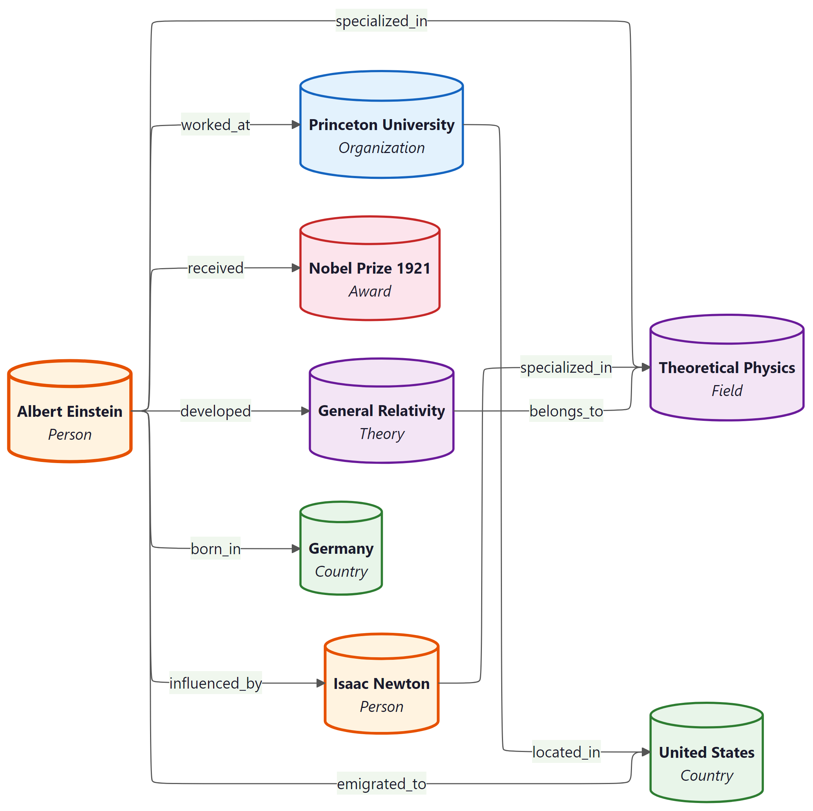

The universe is not made of atoms. It is made of stories. And the best stories are the ones where you can trace every connection.
RAG, Graph-Obsessed AI Agent
Vector search finds documents that are semantically similar, but it cannot reason about relationships between entities. Knowledge graphs encode structured relationships (entities, relations, triples) that enable multi-hop reasoning, entity disambiguation, and relationship-aware retrieval. This section covers the knowledge-graph substrate for RAG: triple representations and RDF vs. property graph trade-offs, LLM-based knowledge-graph construction, property-graph storage and Cypher-based retrieval, graph embeddings, and hybrid KG + vector retrieval architectures. The specific GraphRAG technique (Microsoft's community-summarization-over-graph approach, plus its LazyGraphRAG and DRIFT variants) is the dedicated subject of Section 35.3; the goal here is to give you the general KG-grounded retrieval toolbox that GraphRAG and any future graph-augmented method sits on top of. The vector search limitations that motivate this whole family were introduced in Section 31.2.
Prerequisites
Knowledge graph RAG builds on the vector retrieval foundations from Section 32.1 and the advanced retrieval strategies in Section 35.1. Understanding entity relationships and graph traversal will help, though the section introduces these concepts as needed. The structured knowledge representation here complements the unstructured document processing covered in Section 31.4.

What does that look like concretely? Figure 35.2.2 shows a small worked example around Albert Einstein, with each entity as a coloured node and each labelled edge as a relationship the retriever can traverse.

Albert Einstein (Person, central node) is connected by named edges to seven other entities: born_in Germany (Country); emigrated_to United States (Country); worked_at Princeton University (Organization); specialized_in Theoretical Physics (Field); received Nobel Prize 1921 (Award); developed General Relativity (Theory); influenced_by Isaac Newton (Person). Additional edges link Isaac Newton specialized_in Theoretical Physics; General Relativity belongs_to Theoretical Physics; Princeton University located_in United States. Each entity is drawn as a colored cylinder labelled with its name and its type.35.2.1 Knowledge Graph Fundamentals
A knowledge graph (KG) is a structured representation of real-world entities and the relationships between them. Unlike documents stored as unstructured text, knowledge graphs encode information as a network of nodes (entities) connected by typed edges (relations). This structured representation complements the dense vector representations used in standard semantic search. This structure enables precise queries about relationships, paths, and patterns that would require complex reasoning over unstructured text.
Knowledge graphs formalize a representational strategy that philosophers and logicians have explored since Aristotle's categorical syllogisms: encoding knowledge as structured relationships between entities. The modern triple format (subject, predicate, object) is a direct descendant of the Resource Description Framework (RDF), which itself draws on the predicate logic of Frege and Russell. The power of this representation is that it supports compositional reasoning: if you know (Einstein, bornIn, Ulm) and (Ulm, locatedIn, Germany), you can infer (Einstein, bornIn, Germany) by traversing the graph. This is the same principle of transitivity that underlies deductive logic. GraphRAG's advantage over vector-based retrieval for multi-hop questions stems from this compositionality: vector similarity can find documents about Einstein or about Germany, but it cannot perform the relational reasoning needed to connect them through intermediate entities. The knowledge graph provides the relational "backbone" that transforms associative retrieval into something closer to logical inference.
35.2.1.1 Entities, Relations, and Triples
The fundamental unit of a knowledge graph is the triple, expressed as
(subject, predicate, object) or equivalently (head, relation, tail).
For example, (Albert Einstein, bornIn, Ulm) encodes a single fact. A knowledge graph
is simply a collection of such triples, forming a directed labeled graph where entities are nodes
and relations are edge labels.
Google's Knowledge Graph, launched in 2012, contained 570 million entities and 18 billion facts. Wikidata now has over 100 million items. If you ever feel overwhelmed organizing your Notion workspace, just imagine maintaining a knowledge graph where "Douglas Adams" needs edges to "author," "42," and "the answer to life, the universe, and everything."

35.2.1.2 RDF vs. Property Graphs
If you are starting a new knowledge graph project for RAG, choose Neo4j with property graphs unless you have a specific reason to use RDF (such as integration with Wikidata or compliance with Semantic Web standards). Property graphs are more intuitive for developers, Cypher is easier to learn than SPARQL, and the Neo4j ecosystem has the best LLM integration tooling available today.
Two main formalisms exist for representing knowledge graphs. RDF (Resource Description Framework) is a W3C standard that represents all knowledge as triples and uses URIs to identify entities and relations. RDF is queried using SPARQL and is the foundation of the Semantic Web (Wikidata, DBpedia). Property graphs allow nodes and edges to carry arbitrary key-value properties, offering greater flexibility. Property graphs are queried using Cypher (Neo4j) or Gremlin and are more commonly used in industry applications.
| Feature | RDF | Property Graphs |
|---|---|---|
| Data model | Subject-Predicate-Object triples | Nodes and edges with properties |
| Query language | SPARQL | Cypher, Gremlin |
| Edge properties | Requires reification (complex) | Native support |
| Standards | W3C standard, widely interoperable | No universal standard |
| Typical databases | Blazegraph, Virtuoso, Stardog | Neo4j, Amazon Neptune, TigerGraph |
| Best for | Linked data, semantic web, ontologies | Application data, recommendations |
35.2.2 Building Knowledge Graphs with LLMs
Traditionally, knowledge graph construction required extensive manual curation or specialized NLP pipelines for entity extraction and relation classification. LLMs have dramatically simplified this process by extracting structured triples directly from unstructured text through carefully designed prompts.
# implement extract_triples
from openai import OpenAI
import json
client = OpenAI()
def extract_triples(text, entity_types=None):
"""Extract knowledge graph triples from text using an LLM."""
type_hint = ""
if entity_types:
type_hint = f"\nFocus on these entity types: {', '.join(entity_types)}"
response = client.chat.completions.create(
model="gpt-4o",
messages=[{
"role": "system",
"content": f"""Extract knowledge graph triples from the text.
Return a JSON array of objects with keys: head, relation, tail.
Use concise, canonical entity names.
Use lowercase relation names with underscores.{type_hint}
Example output:
[
{{"head": "OpenAI", "relation": "developed", "tail": "GPT-4"}},
{{"head": "GPT-4", "relation": "is_a", "tail": "language model"}}
]"""
}, {
"role": "user",
"content": text
}],
response_format={"type": "json_object"},
temperature=0.0
)
result = json.loads(response.choices[0].message.content)
return result.get("triples", result)35.2.2.1 Storing Triples in Neo4j
This snippet inserts knowledge-graph triples into a Neo4j database using Cypher queries.
# Define KnowledgeGraphStore; implement __init__, add_triples, find_neighbors
# See inline comments for step-by-step details.
from neo4j import GraphDatabase
class KnowledgeGraphStore:
"""Store and query knowledge graph triples in Neo4j."""
def __init__(self, uri, user, password):
self.driver = GraphDatabase.driver(uri, auth=(user, password))
def add_triples(self, triples):
"""Insert triples as nodes and relationships."""
with self.driver.session() as session:
for triple in triples:
session.run("""
MERGE (h:Entity {name: $head})
MERGE (t:Entity {name: $tail})
MERGE (h)-[r:RELATES {type: $relation}]->(t)
""", head=triple["head"],
tail=triple["tail"],
relation=triple["relation"])
def find_neighbors(self, entity, max_hops=2):
"""Find all entities within N hops of the given entity."""
with self.driver.session() as session:
result = session.run(f"""
MATCH path = (e:Entity {{name: $entity}})
-[*1..{max_hops}]-(neighbor)
RETURN path
LIMIT 50
""", entity=entity)
return [record["path"] for record in result]
def query_relationship(self, head, tail):
"""Find relationship paths between two entities."""
with self.driver.session() as session:
result = session.run("""
MATCH path = shortestPath(
(h:Entity {name: $head})-[*]-(t:Entity {name: $tail})
)
RETURN path
""", head=head, tail=tail)
return [record["path"] for record in result]One of the hardest challenges in LLM-powered KG construction is entity resolution: determining that "Einstein," "Albert Einstein," and "A. Einstein" all refer to the same entity. Without careful entity resolution, the graph becomes fragmented with duplicate nodes. Common approaches include embedding-based deduplication (comparing entity name embeddings), LLM-based coreference resolution, and linking to external KGs like Wikidata for canonical entity identifiers.
35.2.3 Graph Embeddings
Graph embeddings map entities and relations from a knowledge graph into continuous vector spaces, enabling similarity-based retrieval, link prediction (predicting missing triples), and integration with dense retrieval systems. The key challenge is preserving the structural properties of the graph in the embedding space.
35.2.3.1 TransE
TransE (Bordes et al., 2013) is the foundational graph embedding model. It represents relations
as translations in embedding space: if (h, r, t) is a true triple, then the
embedding of the head entity plus the embedding of the relation should approximately equal
the embedding of the tail entity: h + r ≈ t. The model is trained by
minimizing a margin-based loss that pushes correct triples closer than corrupted triples.
35.2.3.2 DistMult
DistMult (Yang et al., 2015) models relations as diagonal matrices (represented as vectors) and
scores triples using a bilinear product: score(h, r, t) = h · diag(r) · t.
This is equivalent to an element-wise product followed by a sum. DistMult is simple and effective
but cannot model asymmetric relations (it gives the same score to (h, r, t) and
(t, r, h)), which limits its applicability.
import torch
import torch.nn as nn
class TransE(nn.Module):
"""TransE knowledge graph embedding model."""
def __init__(self, num_entities, num_relations, dim=128):
super().__init__()
self.entity_emb = nn.Embedding(num_entities, dim)
self.relation_emb = nn.Embedding(num_relations, dim)
# Initialize with uniform distribution
nn.init.uniform_(self.entity_emb.weight, -6/dim**0.5, 6/dim**0.5)
nn.init.uniform_(self.relation_emb.weight, -6/dim**0.5, 6/dim**0.5)
def forward(self, heads, relations, tails):
"""Score triples: lower distance = more plausible."""
h = self.entity_emb(heads)
r = self.relation_emb(relations)
t = self.entity_emb(tails)
# TransE scoring: ||h + r - t||
score = torch.norm(h + r - t, p=2, dim=-1)
return score
def margin_loss(self, pos_score, neg_score, margin=1.0):
"""Margin-based ranking loss."""
return torch.relu(margin + pos_score - neg_score).mean()
35.2.4 Cypher-Based Multi-Hop Retrieval
Once entities live in a property graph, Cypher queries enable precise, multi-hop retrieval that vector search cannot replicate. A two-hop query from a drug, to the gene it targets, to the disease that gene is associated with, is a single MATCH path. The retriever side of a production system usually wraps Cypher behind a natural-language translator, so the agent or LLM only sees a tool with a query parameter and the right answers come back grounded in graph paths.
from neo4j_graphrag.retrievers import CypherRetriever
retriever = CypherRetriever(
driver=driver,
llm=llm,
neo4j_schema="""
Node labels: Drug, Disease, SideEffect, Gene
Relationships: TREATS, CAUSES, INHIBITS, TARGETS
""",
)
# The retriever translates natural language to Cypher.
# Behind the scenes it generates Cypher like:
# MATCH (d:Drug {name: 'Metformin'})-[:TARGETS]->(g:Gene)
# -[:ASSOCIATED_WITH]->(dis:Disease)
# RETURN d.name, g.name, dis.name
result = retriever.search(
query_text="What genes does metformin target, and what diseases "
"are those genes associated with?"
)
for item in result.items:
print(item.content)CypherRetriever: a natural-language query is translated into a Cypher path that traverses Drug-Gene-Disease relations in a single matched query.The same shape generalizes to RDF + SPARQL on Wikidata or DBpedia, to Amazon Neptune's openCypher, and to TigerGraph's GSQL. The pattern is always the same: declare the schema, let an LLM-backed retriever generate the path query, and return the resulting subgraph as retrieved evidence. This is the foundation that any community-summarization or graph-summarization technique (covered in Section 35.3) sits on top of.
35.2.5 Hybrid KG + Vector Retrieval
The most effective production systems combine knowledge graph traversal with vector search. The knowledge graph provides structured multi-hop reasoning and entity-aware retrieval, while vector search provides semantic similarity for unstructured content that the KG does not cover.
# implement hybrid_kg_vector_retrieve
def hybrid_kg_vector_retrieve(query, kg_store, vector_collection, k=5):
"""Combine KG traversal with vector search."""
# Step 1: Extract entities from query
entities = extract_entities_from_query(query)
# Step 2: KG retrieval (structured paths)
kg_context = []
for entity in entities:
neighbors = kg_store.find_neighbors(entity, max_hops=2)
kg_context.extend(format_paths(neighbors))
# Step 3: Vector retrieval (semantic similarity)
vector_results = vector_collection.query(
query_texts=[query],
n_results=k
)
vector_context = vector_results["documents"][0]
# Step 4: Combine both context types
combined_context = f"""Structured Knowledge (from Knowledge Graph):
{chr(10).join(kg_context)}
Relevant Documents (from semantic search):
{chr(10).join(vector_context)}"""
return combined_contextGraphRAG's indexing phase is significantly more expensive than standard RAG because it requires LLM calls for every chunk (entity extraction), every entity pair (relation validation), and every community (summary generation). For a corpus of 10,000 documents, indexing can cost $50 to $500 in LLM API calls depending on the model and chunk count. However, this is a one-time cost, and the resulting graph with community summaries enables query capabilities that are impossible with vector-only RAG.
35.2.6 When to Use Knowledge Graph RAG
| Use Case | Vector RAG | KG RAG |
|---|---|---|
| Simple factual Q&A | Excellent | Good |
| Multi-hop reasoning | Poor | Excellent |
| Corpus-level themes | Poor | Moderate (better with GraphRAG, see 35.3) |
| Entity disambiguation | Poor | Excellent |
| Setup complexity | Low | High |
| Indexing cost | Low (embedding only) | Medium (KG construction; high for GraphRAG) |
Show Answer
Show Answer
CypherRetriever pattern generalize across property-graph databases (Neo4j, Neptune, TigerGraph) and even RDF + SPARQL stores?Show Answer
Show Answer
Show Answer
Display the retrieved chunks or source documents alongside the generated answer. This builds user trust, enables fact-checking, and provides an immediate feedback signal for when retrieval goes wrong.
- Knowledge graphs encode structured relationships: Triples (subject, predicate, object) enable multi-hop reasoning and entity-aware retrieval that vector search cannot provide.
- LLMs simplify KG construction: Prompted LLMs can extract entities and relations from text directly, replacing complex NLP pipelines, though entity resolution remains the dominant quality bottleneck.
- Graph embeddings bridge KGs and vector spaces: TransE and DistMult map entities and relations into continuous vectors, enabling similarity-based operations on structured knowledge.
- Cypher-style path queries are the substrate: Property-graph databases (Neo4j, Neptune, TigerGraph) and RDF + SPARQL stores all expose path-pattern retrieval that can be driven by an LLM-generated query.
- Combine KG and vector retrieval: The most effective production systems use KG traversal for structured multi-hop queries and vector search for semantic similarity, merging both into a unified context.
- For community-summarization on top: The specific GraphRAG technique (Microsoft 2024 + variants) sits on this substrate and gets its own dedicated treatment in Section 35.3.
Who: A data scientist at a pharmaceutical company supporting drug interaction research
Situation: Researchers needed to answer multi-hop questions like "Which drugs that inhibit CYP3A4 are also contraindicated with warfarin?" across 80,000 clinical documents and FDA drug labels.
Problem: Vector-only RAG retrieved documents about CYP3A4 inhibitors or warfarin contraindications individually, but could not reliably find the intersection. Multi-hop reasoning across disconnected chunks produced hallucinated drug names.
Dilemma: Building a comprehensive drug interaction knowledge graph from scratch would take months of expert curation. Using an LLM to auto-extract triples was faster but introduced extraction errors (15% false positive rate on relation extraction).
Decision: They combined a curated seed graph from DrugBank (200K triples covering known interactions) with LLM-extracted triples from internal documents, using a confidence threshold of 0.85 and pharmacist review for borderline extractions.
How: Queries were classified as single-hop (vector search) or multi-hop (graph traversal plus vector search). For multi-hop queries, the system traversed the KG to find entity paths, then retrieved supporting text chunks for each hop to ground the answer.
Result: Multi-hop question accuracy improved from 41% to 79%. Researchers could trace the reasoning chain through explicit graph edges, which was critical for regulatory compliance.
Lesson: Knowledge graphs excel at structured, multi-hop reasoning that vector search alone cannot reliably perform. Combining curated seed data with LLM extraction (plus human review) is a practical path to building domain KGs.
LLM-constructed knowledge graphs are enabling automatic ontology discovery and entity linking from unstructured text at scale, reducing the manual effort traditionally required for graph construction. Temporal knowledge graphs track how relationships evolve over time, addressing the staleness problem in static knowledge representations. Research into hybrid graph-vector retrieval is developing unified index structures that support both structured graph traversals and dense vector similarity search in a single query. The specific community-summarization variant (GraphRAG, LazyGraphRAG, DRIFT) is covered in Section 35.3.
Exercises
These exercises cover knowledge graphs and GraphRAG. Coding exercises use networkx and LLM APIs.
Give an example of a query that a knowledge graph can answer but vector search cannot, and vice versa.
Show Answer
KG wins: "Which companies are competitors of our largest supplier's parent company?" (requires relationship traversal). Vector search wins: "Find documents about sustainable manufacturing practices" (semantic similarity, no specific entities).
Given the sentence "Apple acquired Beats Electronics in 2014 for $3 billion," list all the knowledge graph triples you would extract.
Show Answer
(Apple, acquired, Beats Electronics), (Apple, acquisition_date, 2014), (Apple, acquisition_price, $3 billion), (Beats Electronics, acquired_by, Apple).
Explain what multi-hop reasoning is and why knowledge graphs enable it better than vector search. Provide an example query that requires 3 hops.
Show Answer
Multi-hop reasoning traverses multiple relationship edges. Example: "What university did the CEO of the company that acquired Instagram attend?" Hop 1: Instagram acquired_by Facebook. Hop 2: Facebook CEO is Mark Zuckerberg. Hop 3: Zuckerberg attended Harvard. Vector search cannot chain these relationships.
Given a property graph with Drug, Gene, and Disease nodes and TARGETS and ASSOCIATED_WITH edges, write a Cypher query that returns, for a given drug name, all diseases that are associated with any gene the drug targets. Then describe how an CypherRetriever would translate the natural-language form of this question into your query.
Answer Sketch
MATCH (d:Drug {name: $drug})-[:TARGETS]->(g:Gene)-[:ASSOCIATED_WITH]->(dis:Disease) RETURN dis.name, g.name. The retriever gets the schema (node labels + relation types), prompts an LLM with a few-shot translation example, fills in the entity from the question, and runs the resulting Cypher. The agent sees only the returned disease names, not the query.
Design a hybrid pipeline that uses both vector search and knowledge graph traversal. How do you decide which retriever to invoke for a given query?
Show Answer
Use a query classifier: entity-centric queries (containing named entities and relationship words) go to the KG. Semantic/topical queries go to vector search. Complex queries can invoke both and merge results with source attribution.
Use an LLM to extract entities and relationships from 10 paragraphs of text. Store them as a NetworkX graph and visualize the resulting knowledge graph.
Given a knowledge graph built from a company's Wikipedia page, implement a function that answers multi-hop queries like "Who founded the company that acquired X?"
Implement a two-pass entity-resolution step over an LLM-extracted graph: first cluster surface forms by embedding cosine similarity (threshold 0.92), then ask an LLM to confirm the borderline pairs (0.85 to 0.92) before merging. Report the merge rate and the impact on multi-hop traversal recall.
What Comes Next
In the next section, Section 32.2: Deep Research & Agentic RAG, we explore deep research and agentic RAG patterns, where models actively plan and execute multi-step retrieval strategies.